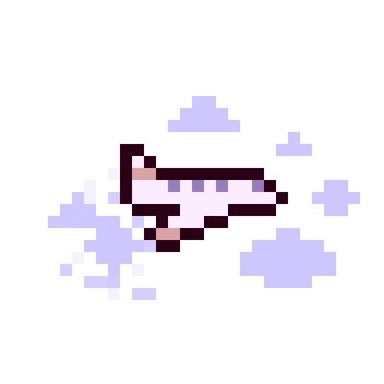
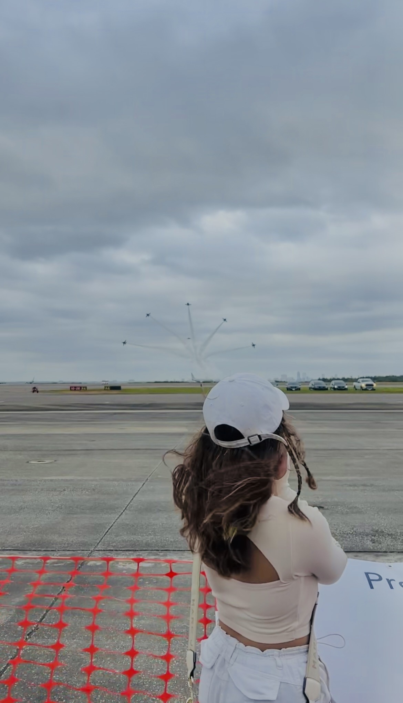
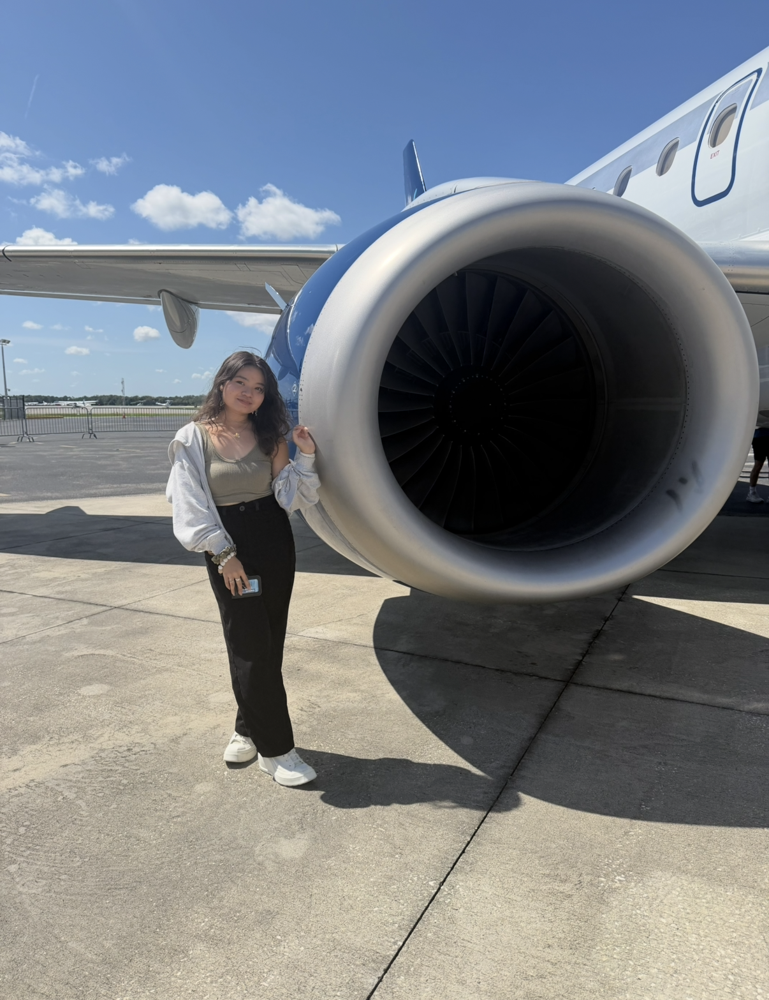

this is prisa herren.
hey there, welcome to my space!






I am a senior at Embry-Riddle Aeronautical University studying Aerospace Engineering with a concentration in Astronautics. I was born and raised in Dumaguete City, Philippines, where my journey began far from the aerospace industry.
Before engineering, sports shaped much of who I am. I earned my black belt in taekwondo, competed regionally and nationally, and served as team captain for two years. After transitioning to recurve archery due to health issues, I went on to compete nationally, was featured in newspapers and interviewed on national sports television, and represented the Philippines at the 2019 World Archery Youth Championships in Madrid, Spain—all while maintaining my standing as an honor student.
That journey taught me to balance ambition with discipline, adapt to unfamiliar challenges, and keep moving forward—qualities that eventually brought me across the world to pursue aerospace engineering. Outside of engineering, I love art, music, and creative projects, interests that often find their way into the things I design and build.

JUL 2025 – SEP 2025
▹ Supported spacecraft structural design activities using CATIA, applying CAD modeling and engineering design principles.
▹ Conducted design research and reviewed CubeSat structural configurations for deployable solar panels to support spacecraft development activities.
▹ Collaborated with engineers and technical personnel on spacecraft structural design tasks.
MATLAB simulation that evaluates mission sustainability based on crew size, mission duration, and available life-support resources.
View on GitHub →MATLAB-based converter for mass, length, speed, force, and temperature with input validation and modular functions.
View on GitHub →
Designed and modeled a modular hybrid rocket engine assembly in CATIA as part of a mechanical design project.
CATIA • 3D CAD • Assembly Design
Arduino-based soil moisture monitoring system with a graphical display that communicates plant condition through animated characters and moisture percentage.
Arduino • C++ • Sensors • OLED/TFT
Handheld Arduino-based engineering unit converter designed around a compact display and physical controls.
Arduino Nano • Embedded Systems • ElectronicsMotion-sensing project using an MPU6050 to measure orientation and translate sensor movement into a real-time visualization.
Arduino • MPU6050 • I²C • Processing